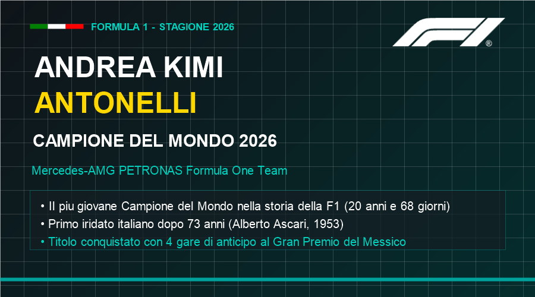
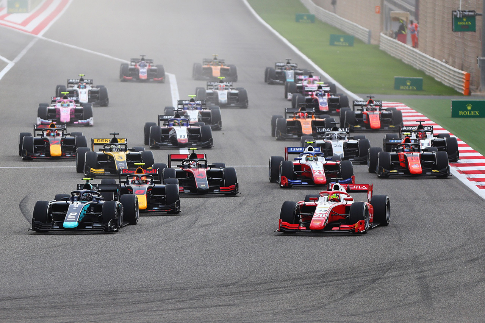
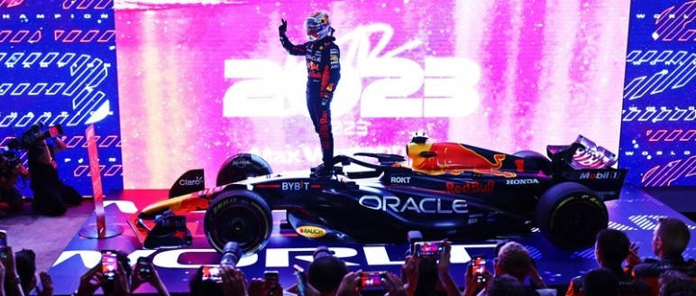
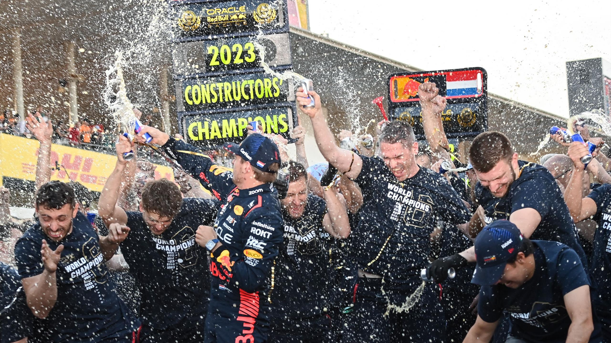
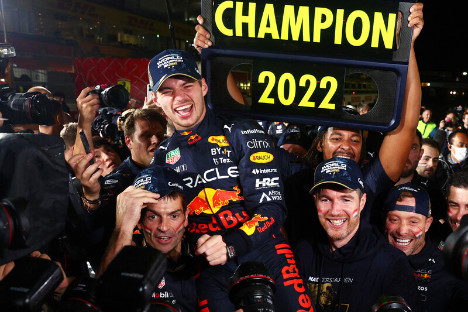
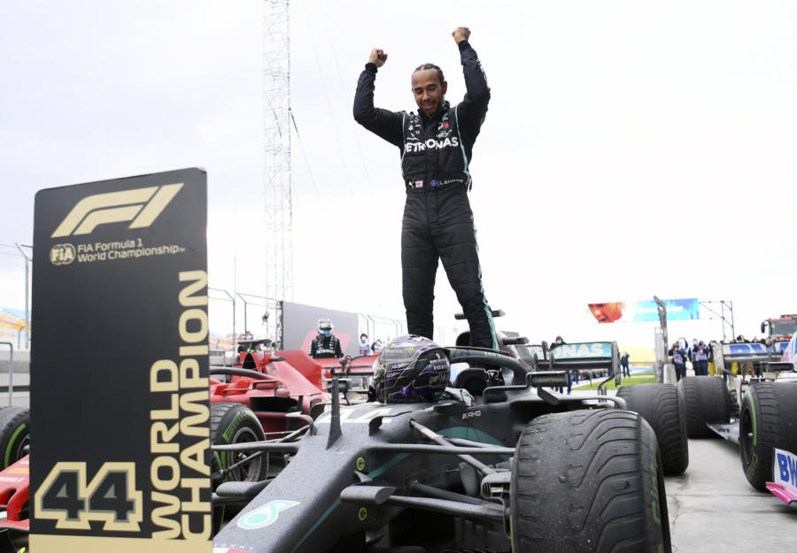

📚 Nuova Libreria Completa delle Stagioni Passate (2006 - 2026)
Accedi all'archivio con pagine dedicate per ogni singola stagione dal 2006 ad oggi, video highlights, gare memorabili e classifiche.
I 10 finali di stagione più emozionanti →
2026: ANDREA KIMI ANTONELLI CAMPIONE DEL MONDO — L'ITALIA TORNA SUL TETTO DEL MONDO

La stagione 2026 ha segnato l'inizio di una nuova era nella storia della Formula 1: nuovi regolamenti tecnici, power unit 50% elettriche, aerodinamica attiva con X-Mode e Z-Mode, carburanti 100% sostenibili. E in questa rivoluzione, a trionfare è stato un giovane italiano di soli 20 anni: Andrea Kimi Antonelli, alla sua prima stagione da prima guida Mercedes, ha dominato un campionato di altissimo livello conquistando il titolo con quattro gare d'anticipo al GP del Messico. È la prima vittoria italiana nel Mondiale Piloti dal 1953 (Alberto Ascari), un'attesa durata 73 anni che l'intero Paese ha celebrato con orgoglio. La Mercedes si avvia verso il titolo Costruttori con un vantaggio considerevole sulla Ferrari.
→ Leggi il reportage completo della Stagione 2026 con tutti i dettagli
2025: IL PRIMO MONDIALE DI LANDO NORRIS E LA DOPPIETTA MCLAREN

La stagione 2025 ha regalato uno dei finali di campionato più emozionanti e incerti della storia recente della Formula 1. Il campionato si è trasformato in un confronto a tre mozzafiato tra i due alfieri della McLaren, Lando Norris e Oscar Piastri, e il quattro volte campione del mondo in carica Max Verstappen sulla Red Bull. Con una MCL39 straordinariamente veloce ed equilibrata su ogni tracciato, la scuderia di Woking ha dominato la classifica costruttori, conquistando il secondo titolo consecutivo con largo anticipo. La lotta piloti si è decisa soltanto all'ultimo respiro nell'appuntamento conclusivo di Abu Dhabi: nonostante il successo di tappa di Verstappen, a Lando Norris è bastato un solido terzo posto per laurearsi Campione del Mondo per la prima volta in carriera con soli 2 punti di vantaggio sull'olandese (423 a 421). Il successo di Norris ha spezzato l'egemonia quadriennale di Verstappen e ha riportato il titolo piloti alla McLaren a distanza di diciassette anni dall'ultimo trionfo di Lewis Hamilton nel 2008.
→ Leggi il reportage completo della Stagione 2025 con video highlights e classifiche
2024: IL POKER DI VERSTAPPEN E IL RITORNO IRIDATO DI MCLAREN

Il Mondiale 2024 è stato contraddistinto da un eccezionale equilibrio in pista e da una competitività senza precedenti nell'era delle monoposto ad effetto suolo, con ben sette vincitori diversi appartenenti a quattro squadre differenti (Red Bull, McLaren, Ferrari e Mercedes). Dopo una prima parte di stagione dominata da Max Verstappen, la McLaren e la Ferrari hanno ricucito completamente il gap prestazionale. Verstappen, grazie a una gestione impeccabile dei punti accumulati e a capolavori di guida sul bagnato (come la leggendaria vittoria partendo dal 17° posto a San Paolo), ha chiuso i giochi al Gran Premio di Las Vegas, conquistando il suo quarto titolo mondiale piloti consecutivo. Tuttavia, nel Mondiale Costruttori la festa è stata tutta della McLaren: la coppia Norris-Piastri ha regalato alla scuderia britannica il titolo costruttori dopo ben 26 anni di digiuno, superando di misura la Ferrari nell'emozionante finale di Yas Marina.
→ Leggi il reportage completo della Stagione 2024 con la rimonta epica di Interlagos
2023: MAX VERSTAPPEN E IL RECORD DEI RECORD

Il campionato 2023 è passato agli annali come la stagione dei record assoluti. Max Verstappen e la Red Bull RB19, capolavoro ingegneristico firmato da Adrian Newey, hanno instaurato un dominio schiacciante: il fuoriclasse olandese ha vinto ben 19 delle 22 gare in calendario (di cui 10 consecutive, record storico per la F1), chiudendo con 575 punti e conquistando il suo terzo alloro mondiale già durante la Sprint Race del Qatar. La Red Bull Racing ha fatto suo il Mondiale Costruttori con 860 punti, lasciando agli avversari solo le briciole: l'unica gara non vinta dalla scuderia di Milton Keynes è stata il GP di Singapore, conquistato dalla Ferrari di Carlos Sainz.
→ Leggi il reportage completo della Stagione 2023 e il record delle 19 vittorie
2022: UN NUOVO CAPITOLO DELLA STORIA

La stagione 2022 è stata caratterizzata dall'introduzione di un nuovo regolamento tecnico, che ha portato alla nascita di monoposto con un design completamente rivoluzionato rispetto al passato. L'obiettivo principale era quello di rendere le gare più spettacolari e aumentare le opportunità di sorpasso, grazie all'adozione di un concetto aerodinamico basato sull'effetto suolo. Nonostante le nuove regole avessero l'obiettivo di avvicinare le prestazioni delle varie scuderie, la Red Bull Racing è riuscita a costruire la monoposto più competitiva del campionato. Max Verstappen, alla guida della RB18, ha dominato gran parte della stagione, conquistando il suo secondo titolo mondiale consecutivo. La Ferrari, dopo alcuni anni di difficoltà, è tornata a lottare per le vittorie grazie alle ottime prestazioni di Charles Leclerc e Carlos Sainz. La F1-75 si è dimostrata una vettura competitiva all'inizio, ma non è riuscita a mantenere il passo con la Red Bull per tutto il campionato. La Mercedes, dopo anni di dominio incontrastato, ha faticato ad adattarsi alle nuove regole. La W13 si è rivelata una vettura difficile da mettere a punto a causa del fenomeno del porpoising, e Lewis Hamilton e George Russell hanno dovuto affrontare una stagione complicata, trovando una sola vittoria in Brasile.
→ Leggi il reportage completo della Stagione 2022 e i duelli ad effetto suolo
2021: UN DUELLO EPICO FINO ALL'ULTIMA CURVA

Il campionato 2021 è stato uno dei più memorabili e combattuti nella storia dello sport. Protagonisti indiscussi della stagione sono stati Max Verstappen della Red Bull Racing e il sette volte campione Lewis Hamilton della Mercedes. I due piloti hanno dato vita a una rivalità epica, caratterizzata da duelli serratissimi, contatti controversi (a Silverstone e a Monza) e sorpassi spettacolari. Gara dopo gara, Verstappen e Hamilton si sono scambiati la prima posizione arrivando alla gara conclusiva di Abu Dhabi a pari punti esatti. Il gran finale è stato deciso al cardiopalma all'ultimo giro dopo l'uscita della safety car, con Verstappen che ha superato Hamilton conquistando il suo primo titolo mondiale all'età di 24 anni, mentre la Mercedes si è aggiudicata l'ottavo titolo costruttori consecutivo.
→ Leggi il reportage completo della Stagione 2021 e la finale di Abu Dhabi
2020: UN ANNO STRAORDINARIO SOTTO L'OMBRA DELLA PANDEMIA

La stagione, inizialmente prevista per marzo, è stata posticipata di diversi mesi a causa delle restrizioni globali imposte per contenere la pandemia. Nonostante le difficoltà, la Formula 1 è riuscita a disputare un campionato di 17 gare in tempi record su storici tracciati europei come Mugello, Imola, Nürburgring e Portimão. Lewis Hamilton e la Mercedes W11 hanno confermato una superiorità schiacciante: il pilota britannico ha conquistato il suo settimo titolo mondiale, eguagliando il primato di Michael Schumacher e superando il record storico di vittorie assolute precedentemente detenuto dal campione tedesco.